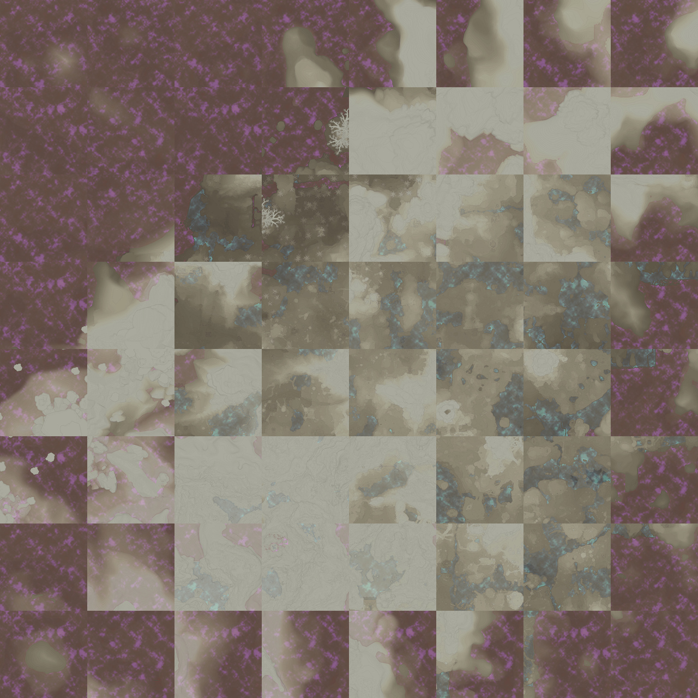

3D 地图与标点显示的三种路径 · 含实测结论与工作量评估
项目已缓存 Embervale 底图 64 张 1280×1280 瓦片，覆盖 10240×10240，与画布 extent 完全一致。这看起来是个现成的高程来源：地图上的明暗就是山体阴影。于是做了实测。

把底图亮度当作高程代理，与本项目已有的真实高程图做配准搜索，遍历四种翻转与 ±40 像素的平移：
| 对照方式 | 相关系数 |
|---|---|
| 原始对齐 | +0.109 |
| 最优配准，翻转 rot180 加偏移 36,36 | +0.160 |
此路不通。最优配准下相关系数仅 +0.16，说明底图的明暗与真实地形高度基本无关。底图内容偏平，且被 Shroud 紫雾与水体配色主导。想靠它做出可信的地形起伏，只会得到一片随机噪点。
| 路线 | 高程来源 | 授权 | 视觉效果 | 工作量 |
|---|---|---|---|---|
| A 立体展示层 | 无，用平面加厚度 | 现有 CC BY-NC-SA 底图 | 有透视、可旋转、点位立体 | 2 至 3 天 |
| B 授权接真地形 | gamevault 的高程数据 | 需向对方取得许可 | 与目标站点一致 | 1 至 2 天，叠加在 A 之上 |
| C 自建提取管线 | 自己安装的游戏本体 | 完全自主 | 与目标站点一致 | 2 至 4 周 |
不引入任何新数据，把现有底图与点位放进 Three.js 场景，做出真正的三维观看体验。
hitTestAll 的「同一点位堆叠」语义要一并迁移，尖塔那种重叠点位在 3D 里更容易被挡住。mapMath.ts 已经把换算拆成了纯函数，3D 只需再加一层 world → 三维坐标 的映射，crs 与 world 两层直接复用，不需要改动现有 2D 代码。要接受的前提：没有真实起伏。这块是平的，所有点位都在同一高度。看着比 2D 有层次，但不是目标站点那种「山脉真的立起来」的效果。
目标站点的高程数据已经把游戏世界烘焙成了 2560² 与 5120² 两级网格，体素边长 4 米与 2 米，另有洞穴体素分块。拿到它，方案 A 的地表换成真实高程网格即可，其余全部复用。
/contact，本身是逆向社区性质的项目。取得书面许可后，无论接数据还是后续维护都站得住。从自己安装的游戏本体读世界数据，自己生成高程。目标站点的前端里就带着这套读取器的实现思路：8×8×8 体素砖块、游程编码的材质与密度双流、以及 zstd 帧的存档容器。
| 步骤 | 内容 | 产出 |
|---|---|---|
| 1 | 先确证 units-per-meter，按勘察结论填 1 并做一次游戏内实测核对 | 米制描述上线，3D 也有了比例依据 |
| 2 | 做方案 A，3D 作为 /map 上的可选视图切换 | 可旋转的立体地图与点位 |
| 3 | 同时向 gamevault 发信询问授权 | 决定能否进入方案 B |
| 4 | 有授权则接真地形；无授权且确有必要，再评估方案 C | 真实起伏 |
robots.txt 禁止 /data/ 路径，产品化使用必须先取得许可。